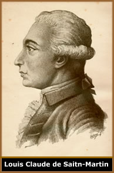

Teurgia é
uma palavra de origem grega que pode ser traduzida como
obra divina (theoi–Deus e ergein-obra)
e faz referência a uma modalidade de magia cerimonial
que busca através de práticas como orações
e rituais incorporar uma manifestação divina
no praticante; além de uma aproximação
pura e profunda com a divindade em questão.
Teurgia na História
Embora
a palavra Teurgia tenha sido aplicada apenas a
partir da era romana, as primeiras referências sobre
sua prática encontram-se em aproximadamente 10.000
a.C entre os orfistas (adeptos do orfismo – doutrina
grega que pregava uma continuidade paradisíaca da
existência após a morte) chegando até
aproximadamente dois séculos antes da era cristão,
quando o texto do Oráculo dos Caldeus especificou
instruções distintas para a prática
e exercício da Teurgia.
Filósofos neoplatônicos promoveram
a Teurgia como uma prática intimamente associada
à natureza transcendental. Durante o império
bizantino foi citada por Georgios Pletho e Michael Psellus
através de referências do Oráculo
dos Caldeus. Já na era medieval a Teurgia perdeu
sua visibilidade e retornou apenas na renascença
através de Cornelius
Agrippa, entre outros ocultistas. Nos idos do século
XVIII, ganhou notoriedade através de Martinez de
Pasqually; posteriormente, rituais teúrgicos foram
publicados por Amadou e Ambelain.
Louis Claude de Saitn-Martin, discípulo
de Pasqually, através das bases estabelecidas por
seu mestre, desenvolveu seu próprio sistema teúrgico
e declarou que "Teurgia não é apenas
um presente de Deus ao Homem, é uma responsabilidade
a qualquer um, desde que sinta o verdadeiro desejo da realização
em seu coração; pois Deus oferece ao Homem
a oportunidade para ascender tal sentimento em seu coração".
Ritualização
Sob uma definição mais simplista,
pode-se compreender que o ritual teúrgico é
a manifestação interior do homem através
de palavras, orações, meditações
e de um desejo intenso de estar associado a Deus.
Segundo seus praticantes, o exercício
do ritual teúrgico atinge vários níveis
da existência humana como o plano psicológico
e, obviamente, o espiritual, através da harmonia
plena com Deus. Porém, a transcendência do
homem de sua natureza humana é o aspecto mais significativo
a ser considerado.
A cerimônia teúrgica oferece
ao praticante a liberdade de compor seu próprio ritual
de acordo com os princípios legítimos da espiritualidade.
Entretanto, pode-se compreender que há uma estrutura
central que estabelece algumas noções básicas.
Assim, de acordo com os preceitos teúrgicos,
admite-se que a inspiração que motiva o ritual
é de origem divina e o homem é o praticante
(agente operador) que age em cooperação com
a divindade. O sacramento da sagrada sacristia é
essencial ao praticante; ou seja, o cerimonial é
impraticável se o indivíduo não aceitar
em seu espírito a força presente de Deus.
Partindo deste princípio, passa-se
aos requisitos básicos que são a motivação,
modo de vida e condições ambientais (localidade,
clima etc). Em seguida, adota-se quatro virtudes como bases
do "templo interior": pureza, amor, fé
e remissão. Finalmente, é necessário
o estado de oração interior e a manifestação
da nipsis (autocontrole da consciência que liberta
o espírito de obsessões).
A ritualização efetiva exige
uma mesa coberta com um tecido branco (que exerce a função
de altar), velas, cruz, incenso, palavras e gestualização
do praticante; além do novo testamento expondo o
primeiro capítulo do Evangelho de São João.
O início ocorre com o ato de contrição
e a expressão do arrependimento seguido da invocação
do anjo guardião. Em seguida, passa-se aos louvores
e à glorificação; além da verbalização
das orações. Finaliza-se com a operação
específica (um pedido de cura ou consagração
de objetos, por exemplo) e a expressão da gratidão.
Teurgia
& Religiões
Sob um ponto de vista
mais amplo, pode-se compreender a Teurgia como uma referência
básica de ritualização e cerimoniais
que se encontra presente em inúmeras doutrinas e
religiões. Sua estrutura ritualística, com
uma ambientação específica, instrumentos,
meditações e verbalização de
determinadas orações são encontradas
inclusive na liturgia cristã; bem como nas doutrinas
neopagãs e religiões orientais.
Portanto, mais que uma
prática mágica cerimonial, a Teurgia oferece
uma estrutura ritualística simples que se pode aplicar
à doutrinas mais distantes entre si e ao mesmo tempo
profunda, pois se sustenta na espiritualidade humana e no
desejo constante de interagir com a divindade e, de certa
forma, divinizar-se também.
Por
Spectrum